6.1 Current Design Wave Database for Ship Structures
The need to improve the availability, quality, and reliability of environmental databases (mainly wind and wave data for ships) has been identified by various international professional organisations (e.g. ISSC 2009) as well as Classification Societies. Several studies have attempted to quantify the uncertainties due to insufficient knowledge of the wave climate (e.g. Bitner-Gregersen and Guedes Soares 2007) resulting in differences in long-term ship responses of up to 150 % of a nominal value, e.g. Guedes Soares and Trovao (1991), Bitner-Gregersen et al. (1995a). This high uncertainty may lead to overdesign/underdesign of ships, with consequent significant economic/risk impact.
Visual observations of waves collected from ships in normal service are currently used in the design of ship structures. Hogben and Lumb (1967) data were originally applied, but these were later replaced by the more reliable Global Wave Statistics (GWS) visual observations (British Maritime Technology, BMT 1986). In the GWS atlas the ocean is divided into 104 regions as shown in Fig. 6.1. The visual data represent a sufficiently long observation history to provide reliable global climatic statistics. Wind speeds (Beaufort Scale) and directions, and wave heights in a coarse code have been reported since 1854. Observations of wave height, period, and direction have been collected from ships in normal service all over the world since 1949, and are made in accordance with guidance notes from the World Meteorological Organisation (2001, 2003).
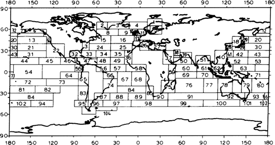
Fig. 6.1
Global wave statistics zone designation, BMT (1986)
The utility of visual observations depends on appropriate calibration versus accurate measurements of the wave characteristics. BMT (1986) compared the GWS marginal distributions for wave heights and wave periods with instrumental Shipborne Wave Recorder and National Oceanic and Atmospheric Administration (NOAA) buoy data for different locations and concluded that the wave heights and periods for which statistics were given corresponded to measured values. However, the accuracy of the GWS data has been questioned, especially concerning the wave period (e.g., Bitner-Gregersen and Cramer 1994; Bitner-Gregersen et al. 1995a, b).
Several studies have addressed uncertainties in the Global Wave Statistics data and their effects on ship loads and responses, as well as on fatigue damage (Chen and Thayamballi 1991; Bitner-Gregersen et al. 1993, 1995a), and have concluded that the GWS should be used with care. In 1995, a general procedure for correction of the mean wave period identified bias of the GWS data was suggested by Bitner-Gregersen et al. (1995b), and a scatter diagram for the North Atlantic, representing an average diagram for ocean zones 8, 9, and 15, was proposed for ship design. The scatter diagram was numerically generated from a joint distribution of wave height and wave period fitted to the GWS data, where the wave period distribution was corrected by the period bias. The original GWS data were not used. This was not only because of the wave period inaccuracy, but also, as in the GWS atlas, the last wave height class is in the range 11–12 m, indicating that observations of wave height beyond 12 m were summed up by BMT (1986) in this class. The numerically simulated North Atlantic scatter diagram altered the last wave height class to a height class range 16–17 m.
This adjusted scatter diagram has been adopted as a DNV standard in 2000 (today DNV RP-C205 2010). Later, on a request from the International Association of the Classification Societies (IACS), the North Atlantic scatter diagram was extended by DNV to include additionally the ocean area 16 (see Fig. 6.1), using the procedure described above. The extended scatter diagram is included in IACS Recommendations No. 34 (2000), as well as in the DNV Recommended Practice (2010), and is regarded as a 20-year return period scatter diagram for ship design. It should be noted that this updated scatter diagram is slightly more conservative than the exact 20-year scatter diagram would be. For ship load and response calculations, a joint distribution of significant wave height and zero-crossing wave period is usually fitted to the data given by the scatter diagram, and the 20-year (or 25-year) return period is then derived from the fitted model. The DNV (2010) Recommended Practice is used for both ship and offshore structures. Note that the North Atlantic scatter diagram is also used for design of Floating Production Storage and Offloading systems (FPSOs), while other offshore structures are designed for location-specific met-ocean environments.
The necessity of replacing the current wave database for ship design by measured data, or by a combination of numerical and measured data, has increasingly become a subject for discussion within DNV and IACS in recent years. Currently, two other sources of global met-ocean climate are available, in addition to the ship observations. These are data from numerical wave prediction models and satellite data. Based on these data and on instrumental observations, several global databases have been developed. However, predictions based on these databases show significant discrepancies (see Bitner-Gregersen and Guedes Soares 2007), and therefore they are presently unsuitable for establishing new design wave data statistics for ships. This topic needs to be revisited continuously as wave databases are under development.
6.2 Hull Girder Collapse in Extreme Sagging Conditions
In light of the findings summed up in Chap. 4 the next sections will illustrate the potential impacts that climate change may have on the design by using tanker design as an example. More specifically, the impact on hull girder collapse of tankers has been studied. The IACS Common Structural Rules for Tankers, IACS (2010), has been used to demonstrate this effect on structure design.
During the development of the IACS Common Structural Rules for Tankers (CSR) Structural Reliability Analysis (SRA) was used as a tool to calibrate a new hull girder ultimate strength criterion. This rule criterion was introduced as an explicit control of the most critical structural failure mode identified as sagging failure of a loaded tanker in severe weather conditions.
6.2.1 Set-Up of the Structural Reliability Analysis (SRA)
When establishing the IACS Common Structural Rules for Tankers, IACS (2010), a probabilistic model for the midship vertical bending moment, due to still water and wave loads, as well as for the ultimate bending moment capacity was developed and applied. A test set of five ships, ranging from Product tanker to VLCC, were analysed. Here, these cases have been further investigated by SRA to demonstrate the impact of expected wave climate change on the hull girder failure probability of ship structure design.
The methodology used by the IACS Common Structural Rules for Tankers adopted in the present study is described in Bitner-Gregersen et al. (2002) and Hørte et al. (2007a, b). The probabilistic analysis program PROBAN (DNV 2002) is applied for the calculations. Five oil tankers, ranging from Product tanker to VLCC are considered. Note that the ship length is ranging from 174.5 to 320 m. The ship dimensions are given in Table 6.1. For detail description of input used in the study the reference is made to Hørte et al. (2007b).
Table 6.1
Test ships
Case | Ship type | Lpp (m) | Breadth (m) | Depth (m) |
|---|---|---|---|---|
1 | Suezmax | 263 | 48 | 22.4 |
2 | Product | 174.5 | 27.4 | 17.6 |
3 | VLCC 1 | 320 | 58 | 31 |
4 | VLCC 2 | 316 | 60 | 29.7 |
5 | Aframax | 234 | 42 | 21 |
Ship structural strength and ship stability are calculated, following international standards, in extreme events with an occurrence of once in every 20 years [Ultimate Limit State (ULS)].
The projections of wave climate due to climate change in the North Atlantic, discussed in Sect. 2.6 show an increase of extreme significant wave height from ca. 0.5–1.0 m with the uncertainty of the same size. Note that these numbers refer to the end of the twenty-first century.
The results presented herein are limited to the structural collapse of ships owing to buckling of ship decks in extreme sagging conditions (see Fig. 6.2); Bitner-Gregersen et al. (2011), Bitner-Gregersen and Skjong (2011). The potential consequence is total loss of ship and crew. For a tanker in full loading conditions, the assumption of structural collapse owing to ship deck buckling in the extreme sagging condition seems to be rather close to realistic collapse mode as the contributions to the moment capacity from longitudinal bulkheads and ship sides are all small.
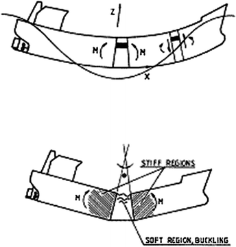
Fig. 6.2
Hull girder collapse in extreme sagging conditions
The Ultimate Limit State (ULS) failure criterion is expressed in terms of a limit state function g(
X
) [see Eqs. (5.1–5.2)] that describes the failure set (no hull girder collapse), the failure surface, and the safe set (hull girder collapse).
Thus, the probability of failure due to buckling of ship deck is (see Fig. 6.2). with the corresponding reliability index 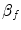 defined as where Φ denotes the standardized cumulative normal distribution function.
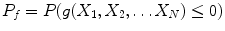
(6.1)
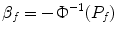
(6.2)
For hull girder collapse the following limit state function is used where M
sw
is the random still water bending moment, M
wv
is the random wave bending moment, M
u
is the random ultimate capacity, and X
R
, X
st, & X
nl
and X
sw
represent model uncertainty factors for the capacity, wave-induced bending moments and still water bending moment, respectively. The set-up of the analysis is illustrated in Fig. 6.3.
The load analysis is carried out prior to the structural reliability analysis, with transfer functions stored on an interface file. This enable short- and long-term response calculation within the probabilistic analysis. The capacity calculation is an integrated part of the probabilistic analysis. In addition to the probability of failure, the SRA provides uncertainty importance factors, sensitivity factors and the design point which represents the most likely values of the variables at failure (see Sect. 5.2). The first order reliability analysis method (FORM) has been used.
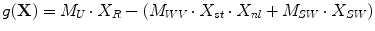
(6.3)
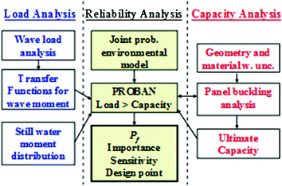
Fig. 6.3
The set-up of the analysis
6.2.2 Still Water Bending Moment
In general for tankers, ballast conditions induce hogging moments whereas loaded conditions induce sagging moments. Therefore, sagging failure in ballast condition is rather unlikely. In addition, the wave moment is generally somewhat larger in loaded than in ballast conditions.
The capacity in hogging is usually significantly higher than in sagging due to the double bottom. Sagging failure is governed by the ultimate capacity of the deck and is considered in the present work. The consequences of sagging failure are also more critical than those of hogging failure, both from the economic and environmental points of view, since the ship is fully loaded.
The following steps have been made for the assessment of the probability distribution of the random still water bending moment (SWBM), M
sw
:
2.
Removing emergency ballast and segregated/transitory/group load conditions (that often give hogging).
3.
Calculation of the mean value and the standard deviation of the identified loading conditions, assuming equal weighting for each condition.
Based on this, a generic distribution of the midship still water bending moment for the loaded (sagging) condition has been established. A normal distribution has been fitted to the data, with a mean value of 0.7 and a standard deviation 0.2 times the maximum value from any full-load condition listed in the loading manual. There is no upper threshold applied to the distribution. In other words, there is a chance that the SWBM may attain a value that exceeds the maximum value in the loading manual, at a probability of 7 %.
Furthermore a model uncertainty factor, X
sw
, has been defined by a normal distribution with a mean value of 1.0 and a standard deviation of 0.1 [N(1.0, 0.1)], and multiplied to the distribution of the still water bending moment. This uncertainty was included to reflect the uncertainty between the actual SWBM and the corresponding calculated value in the loading manual.
6.2.3 Wave Bending Moment
M
wv
is the random wave bending moment (WVBM). The structural response due to waves is based on linear hydrodynamic analysis. Results in terms of transfer functions (or Response Amplitude Operators, RAOs) for the midship vertical bending moment are used. The short- and long-term response is computed within the probabilistic analysis. The basic assumption is a narrow banded Gaussian response in each sea state. This assumption implies Rayleigh distributed maxima for a given sea state, for which a Gumbel type extreme value distribution can be derived. Finally, the annual extreme value distribution is obtained assuming independence between sea states. The approach using transfer functions with PROBAN is documented by Mathisen and Birknes (2003). This model captures the uncertainty in the short term response.
The annual probability of failure is calculated taking into account the relevant fraction of the year for which the ship is in the fully loaded condition and at sea; assumed to be 42.5 % of the year.
In heavy weather at sea, the ship is most likely to operate in head seas, or nearly head seas. The waves tend to be more long-crested in extreme sea states than in lower sea states. With these considerations, the analyses are carried out with the assumption of wave spreading corresponding to a cos4 directional spreading function, and a triangular distribution of main heading with limits ±30 around head sea.
The Pierson Moskowitz (PM) wave spectrum is applied in the analyses. Furthermore, an assumption of zero-speed is adopted. This assumption is satisfactory, because in an ULS condition the forward speed is very low (less than 5 knots), and the load analysis is not sensitive to small forward speed variations as shown e.g. by Bitner-Gregersen et al. (2002).
A model uncertainty for the response calculation is applied in terms of a normally distributed uncertainty factor with a mean value of 1.0 and a coefficient of variation of 0.1. This uncertainty factor is assumed to cover uncertainty in the linear results, including the effect of uncertainty in the wave spectrum. Reference is made to DNV (1992).
Furthermore, the use of a linear analysis for the bending moment response in extreme weather is a simplification. The problems are inherently non-linear dealing with large-amplitude non-linear wave fields and the variable geometry of the ship’s hull as it comes in and out of the water as well as with slamming, wave breaking and green water on deck, ISSC (2000a). It is difficult to conclude on a “correct” model uncertainty to account for non-linear effects; e.g. the extent of green water on deck will tend to reduce the sagging moment. Bottom slamming and whipping may lead to an increase in the sagging moment, but is not so likely to occur in loaded conditions.
Hence, model uncertainty factors X
st
for the linear response calculation and X
nl
for the nonlinear effects are applied, both N(1.0, 0.1).
A joint environmental model, with a 3-parameter Weibull distribution for the significant wave height Hs and a conditional lognormal distribution for the zero-crossing wave period, T
z
due to Bitner-Gregersen (1988) is applied (see also Bitner-Gregersen and Haver 1989, 1991; Mathisen and Bitner-Gregersen 1990)
where
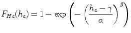
(6.4)
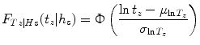
(6.5)
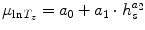
(6.6)
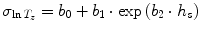
(6.7)
The parameters α, β, γ, a
i
and b
i
are site specific, and all depend on the sailing route of the ship over the design life. Note that the model can also be applied to the spectral peak period T
p
.
The model described by Eqs. (6.4–6.7) has been fitted to the North Atlantic scatter IACS diagram (IACS 2000) which represents visual observations with correction of the wave period due to Bitner-Gregersen et al. (1995a, b) see Sect. 5.5.1.
The environmental model is modified to reflect the climate change by shifting the distribution of the significant wave height by a constant value corresponding to the specified increase. The formulation of the conditional distribution of the zero-crossing period is kept unchanged. This simplification is considered to be acceptable for extremes but not for fatigue calculations. This idea is further developed in Vanem and Bitner-Gregersen (2012) who provide closed form expressions for the modified Weibull parameters including climate trends expressed in terms of the mean value and the standard deviation.
6.2.4 Combination of Still Water and Wave Bending Moment
The still-water bending moment is added to the wave moment by linear superposition. Two different combinations, following Turkstra’s combination Rule, (Turkstra 1970), are evaluated:
(a)
An annual extreme value of the wave induced moment together with a random value of the still water moment.
(b)
An annual extreme value of the still water moment together with an extreme value of the wave moment during one voyage.
Depending on the relative magnitude between the two contributions, the variability and the duration of a voyage, either of these combinations may be governing. In the present tanker study it appears that the extreme wave load is most critical and combination (a) is therefore governing for the probability of failure. This is also found in other studies; e.g. Bach-Gansmo and Lotsberg (1989) and Kaminski (1997).
6.2.5 Ultimate Bending Moment Capacity
M
u
is the random ultimate capacity, and it is calculated according to the single step method given in the IACS Common Structural Rules for tankers. The panel buckling program PULS (DNV 2009) is used to compute the ultimate plate field buckling capacity, here as an integrated part of the structural reliability analysis.
The model applied to describe the ultimate moment capacity M
u
of the hull girder, accounting for mode interaction effects between local and overall Euler buckling modes, is based on a non-linear buckling model. For a more detailed description of this capacity model, see Steen (1996).
In this model, the moment capacity is defined as the product of the modified sectional modulus W
u
for the deck and the ultimate strength of the deck panels, i.e.
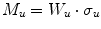
(6.8)
W
u
and σ
u
are both stochastic variables and depend on the buckling characteristics of the deck structure.
The stiffened plate model for the deck plating is assumed to have the same proportions and characteristics over the entire deck area. The deck buckling strength is a function of the geometrical dimensions of the plate and stiffeners, the out-of-straightness of the plate and stiffeners, the Young’s modulus, and the yield stress of the material.
Uncertainty with respect to the yield strength of the material is accounted for in the analysis. The distribution of the yield strength is derived from its characteristic value which represents the lower 5 % fractile. A coefficient of variation of 0.08 is used for mild steel (for the Product tanker) and 0.06 is used for high strength steel (for the remaining test ships). These values are taken from the DNV (1992) and Skjong et. al (1995), and are commonly applied. In ISSC (2000b) comparable yield strength coefficients of variation of 0.09 and 0.07 are given for mild and high strength steel, respectively.
The geometrical imperfections in the plate and the stiffeners is accounted for in the modelling of the ultimate moment capacity. In addition, a model uncertainty factor, X
R,
is applied to the capacity, N(1.05, 0.1). The bias of 1.05 is based on a comparison between the single step method, which is applied here, and non-linear finite element analysis results by Törnqvist (2004).
6.2.6 Results of Structural Reliability Analysis
The wave climate as given in IACS Recommendation No. 34 (2000) is referred herein as a Base Case. The following increase of the extreme significant wave height is considered: 0.5, 1.0 and 2.0 m (see Sect. 2.6), which reflects the variation in the findings on climate change reported in the literature for the North Atlantic. The annual probability of failure for the tankers considered is presented in Figs. 6.4–6.8. The results are illustrated as a function of the steel deck cross-sectional area, where modifications were implemented in terms of changes in the plate thickness and the stiffener size in a realistic proportional manner. The deck area factor equal 1 refers to the initial ship design without modification of significant wave height.
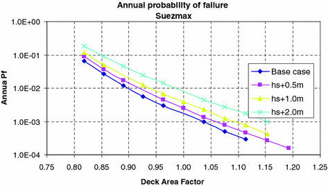
Fig. 6.4
Annual probability of failure, Suezmax
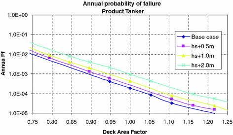
Fig. 6.5
Annual probability of failure, Product Tanker
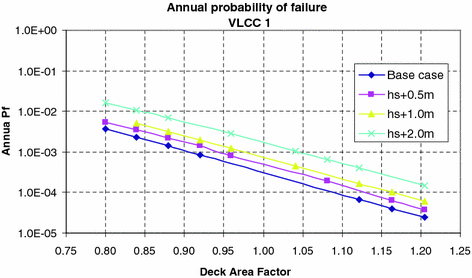
Fig. 6.6
Annual probability of failure, VLCC 1
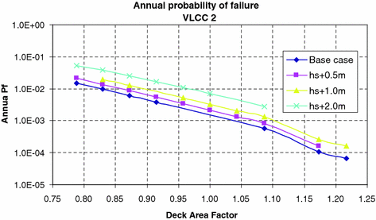
Fig. 6.7
Annual probability of failure, VLCC 2
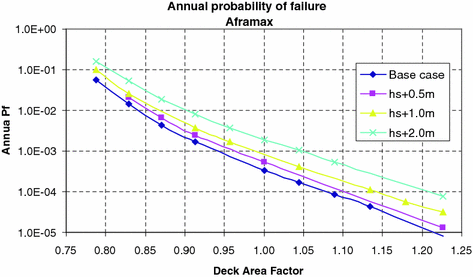
Fig. 6.8
Annual probability of failure, Aframax
The calculated failure probabilities are nominal values, and should not be given a frequency of failure interpretation. The results are more useful on a comparative basis, and the absolute values should be interpreted with caution. In this context it should be noticed that the results presented here are for “net scantlings’’, which is part of the explanation of, what some would say, relatively high failure probabilities. Gross scantling, which is the net scantling plus the corrosion addition, would reduce the failure probabilities by approximately an order of magnitude. There may also be other reasons that the frequencies of hull girder failure in real life is lower than the calculated values reported here; e.g. weather routing is not accounted for, few ships operate in the North Atlantic throughout the lifetime, the yield strength is in many cases higher than the specification require.
The figures show the same overall trend for all the ships analysed. The probability of failure increases by around 50 % for each increase in H
s
by 0.5 m. If H
s
increases by 1.0 m, the deck area (steel weight of the deck in the midship region) needs to increase by some 5–8 % in order to maintain the reliability level. For increase of H
s
by 2.0 m an increase the deck area of by 10–15 % will be needed. The results show that longer ships (VLCC 1, VLCC 2) seem to require the largest increase of the ship deck area.
Rough estimates indicate that reliability level is maintained in design if the characteristic wave bending moment, or the partial safety factor for the wave bending moment, is increased by ca. 8–10 % for an increase in H
s
by 1.0 m. This increase is somewhat more than the increase in the deck area as discussed above.
References
Bach-Gansmo O, Lotsberg I (1989) Structural design criteria for a ship type floating production vessel PRADS 1989 conference proceedings
Bitner-Gregersen EM (1988) Joint environmental model. Annex A, det norske veritas report no. 87-31, Høvik. Madsen HO, Rooney P, Bitner-Gregersen E. Probabilistic calculation of design criteria for ultimate tether capacity of snorre TLP
Bitner-Gregersen EM, Haver S (1989) Joint long term description of environmental parameters for structural response calculations. In: Proceedings of the 2nd international workshop on wave hindcasting and forecasting, Vancouver, B. C
Bitner-Gregersen EM, Haver S (1991), Joint environmental model for reliability calculations. In: Proceedings of ISOPE’91 conference, vol 1, Edinburg, UK, pp 246–253
Bitner-Gregersen EM, Cramer E, Loseth R (1993) Uncertainties of load characteristics and fatigue damage of ship structures. In: Proceedings of OMAE 1993 conference in Glasgow, June 20–24 1993
Bitner-Gregersen EM, Cramer E (1994) Accuracy of the Global Wave Statistics data. In: Proceedings of ISOPE 1994 conference, Osaka, Japan, 10–15 April 1994
Bitner-Gregersen EM, Cramer E, Løseth R (1995a) Uncertainties of load characteristics and fatigue damage of ship structures. Mar Struct 8:97–117CrossRef
Bitner-Gregersen EM, Cramer EH, Korbijn F (1995b) Environmental description for long-term load response of ship structures. In: Proceedings of ISOPE-95 conference, Hague, Netherlands, 11–16 June 1995
Bitner-Gregersen EM, Hovem L, Skjong R (2002) Implicit reliability of ship structures. In: Proceedings of OMAE 2002, Oslo, 23–28 June 2002
Bitner-Gregersen EM, Guedes Soares C (2007) Uncertainty of wave steepness prediction from global wave databases. In: Proceedings of MARSTRUCT conference, Glasgow, March 2007
Bitner-Gregersen EM, Skjong R (2011) Potential impact on climate change on tanker design. DNVRI Position Paper No. 8. http://www.dnv.com/resources/position_papers/impact_climate_change_tanker_design.asp
Bitner-Gregersen EM, Hørte TF, Skjong R (2011) Potential impact on climate change on tanker design. In: Proceedings of OMAE 2011 conference, Rotterdam, 19–23 June 2011
BMT (British Maritime Technology) (Hogben N, Da Cunha, LF, Oliver HN) (1986) Global wave statistics. Unwin Brothers Limited, London
Chen YRN, Thayamballi AK (1991) Consideration of global climatology and loading characteristics in fatigue damage assessment of ship structures. The marine structural inspection, maintenance and monitoring symposium. Virgina, March 1991
DNV (1992) Classification note 30.6: structural reliability analysis of marine structures. July 1992
DNV (2002) PROBAN theory, general purpose probabilistic analysis program, the author Tvedt L, version 4.4, Høvik, Norway
DNV (2010) RP-C205: environmental conditions and environmental loads, Høvik, Norway, April (2010). The 2007 revision available at Internet in 2010. The original was issued in 2000
DNV (2009) PULS 2.0, Panel ultimate limit state, Copyright Det Norske Veritas AS, P.O.Box 300, N-1322 Hovik, Norway
Gran S (1992) Short-term still-water load statistics. DNVR Report 92-2070
Guedes Soares C, Trovao MFS (1991) Influence of wave climate modelling on the long-term prediction of wave induced responses of ship structures. In: Price WG, Temarel P, Keane AJ (ed) Dynamics of vehicles and structures waves. Elsevier Science Publishers, Amsterdam
Hogben N, Lumb FE (1967) Ocean wave statistics. HMSO, UK
Hørte T, Skjong R, Friis-Hansen P, Teixeira AP, Viejo de Francisco F (2007a) Probabilistic methods applied to structural design and rule development. In: Proceedings of the RINA conference “Development of Classification & International Regulations”. 24–25 Jan 2007, London
Hørte T, Wang G, White N (2007b) Calibration of the hull girder ultimate capacity criterion for double hull tankers. In: Proceedings 10th international symposium on practical design of ships and other floating structures. Houston, USA
IACS (2000) Standard wave data for direct wave load analysis. IACS recommendation No.34, Feb 2000. updated in 2001
IACS (2010) Common structural rules for double hull oil tankers with length 150 metres and above. Rules for classification of ships, part 8 chapter 1, July 2010
ISSC (2000a) Special Task Committee VI.1 Extreme Hull Girder Loading, vol 2
ISSC (2000b) Special Task Committee VI.2 Ultimate Hull Girder Strength, vol 2
ISSC (2009) Technical Committee I.1 “Environment”. Bitner-Gregersen EM, Ellermann K, Ewans KC, Falzarano JM, Johnson MC, Nielsen Dam U, Nilva A, Queffeulou P, Smith TWP, Waseda, (Chairman of Committee I.1: E.M. Bitner-Gegersen),vol 1, pp 1–126
Kaminski LK (1997) Reliability analysis of FPSO’s hull girder cross-sectional strength. In: Proceedings of OMAE 1997–vol II, safety and reliability ASME
Mathisen J Birknes J (2003) Statistics of short term response to waves first and second order modules for use with PROBAN. DNV report no. 2003-0051 Rev. No. 02, 07 Nov 2003
Mathisen J, Bitner-Gregersen EM (1990) Joint distribution for significant wave height and zero-crossing period. Appl Ocean Res 12(2):93–103CrossRef
Skjong R, Bitner-Gregersen EM, Cramer E, Croker A, Hagen Ø, Korneliussen G, Lacasse S, Lotsberg I, Nadim F, Ronold KO (1995) Guidelines for offshore structural reliability analysis—general. DNV report no. 95 – 2018
Steen E, (1996) Buckling of stiffened plates with application to longitudinal ship strength. Preliminary draft report, University of Oslo, Mechanics Department (PhD thesis published in 2001)
Turkstra CJ, (1970) Theory of structural safety. SM study no. 2 solid mechanics division, University of Waterloo, Waterloo
Törnqvist R (2004) Non-linear finite element analysis of hull girder collapse of a double hull tanker. DNV report no. 2004-0505, rev. 00, 13 May 2004
Vanem E, Bitner-Gregersen EM (2012) Stochastic modelling of long-term trends in the wave climate and its potential impact on ship structural loads. Appl Ocean Res 37(2012):235–248CrossRef
WMO (World Meteorological Organization) (2001) Guide to marine meteorological services, 3rd edn. WMO-No. 471, Geneva
WMO (World Meteorological Organization) (2003) Manual on the global observing system, vol I and II. WMO-No. 544, Geneva